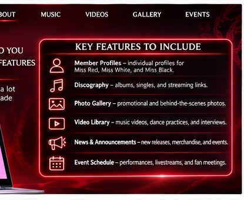

03 + 04 / THE CONNECTION
From the Masquerade Party to the Fan Community.
Research Questions 3 + 4
How does the band engage today, and how do fans want to engage?
Today, the imagined group uses social media to announce live performances. Those performances double as large masquerade parties. The proposed website would bring announcements and interactive fan experiences together in one destination.

Social media posts and live-performance announcements.
How-to choreography videos, costume contests, and interactive fan experiences.
Fan voting and one reliable performance schedule.
Illustrative concepts only: vote in a fan poll, discover the next masquerade event, and explore dance-practice content. No live voting or ticket sales are enabled in this pitch.
Academic concept only. The band and proposed digital capabilities are fictional. This is not a functioning artist website. Visuals are illustrative.